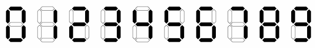

Mùa hè đến là lúc học sinh được nghỉ học, là khoảng thời gian tuyệt vời để vui chơi thỏa thích cùng nhau. Thế nhưng Huy - một học sinh lớp 10 chuyên Toán lại muốn tận dụng những ngày hè rảnh rỗi để "tu luyện" nhằm đạt kết quả cao trong kỳ thi VMO sắp tới. Cậu ta đặt ra một thời gian biểu cho mình và sử dụng đồng hồ báo thức để thực hiện một cách hợp lý. Sau một hồi lục lọi quanh nhà, cậu đã tìm được một chiếc đồng hồ báo thức hiển thị bằng đèn LED mà ba cậu mua cho từ năm ngoái. Không may, do ít sử dụng mà chiếc đồng hồ đã bị hỏng về phần hiển thị giờ. Nó hỏng đến nỗi cậu không thể đọc được thời gian trên đồng hồ mà chỉ đếm được số vạch LED mà nó hiển thị. Vì vậy, để xác định thời gian, cậu phải tìm một thời điểm mà đồng hồ hiện thị có số vạch LED bằng số vạch mà cậu đếm được. Do bận ôn thi, cậu không có thời gian suy nghĩ. Đây chính là lúc các NTU Coder giúp Huy đấy!
Lưu ý: Hình của bài vừa được thay đổi, nếu bạn sai ở test 6 hãy xem lại hình

Input
Số nguyên n (0 <= n <= 30) là số vạch LED mà Huy đếm được.
Output
In ra 5 kí tự theo định dạng hh:mm là thời điểm mà đồng hồ hiển thị có số vạch LED bằng n, trong đó hh là giờ và mm là phút (0 <= hh < 24, 0 <= mm < 60)
Nếu có nhiều kết quả in ra kết quả bất kỳ
Nếu không tìm được in ra Impossible